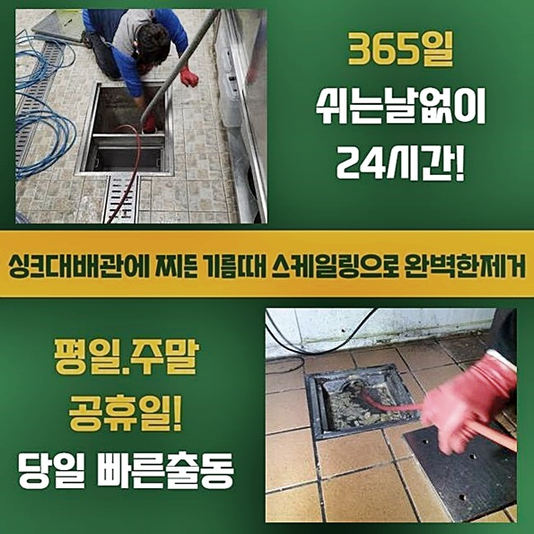
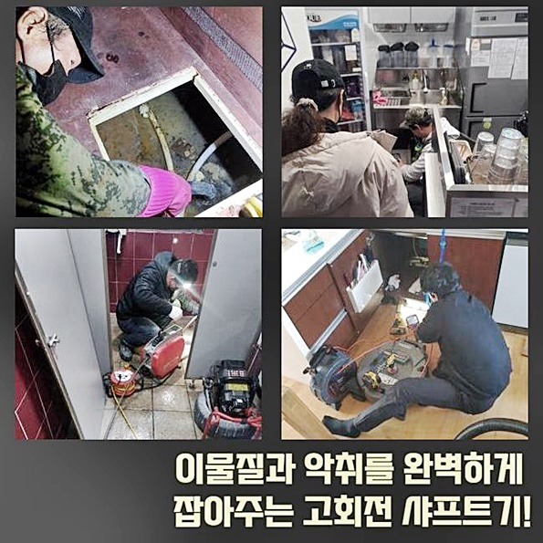
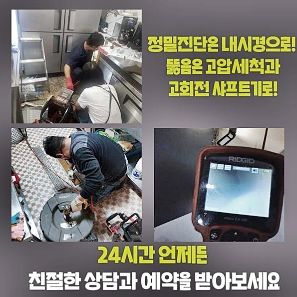
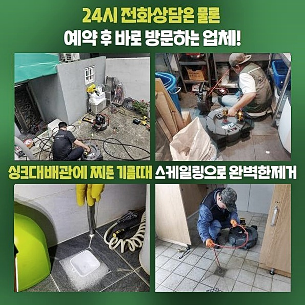
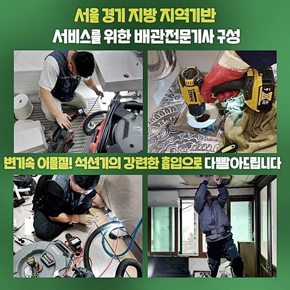
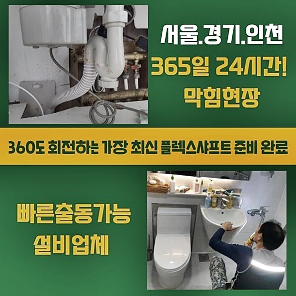

🏠 파주 금촌동세탁기배수구막힘 진동면 고압세척비용 설비
용인시 처인구 배관막힘 전문 시공 후기

📋 작업 개요
- 위치: 용인시 처인구, 수원시 영통구, 화성시 동탄
- 서비스 유형: 배관막힘, 고압세척
- 작업 일시:
- 업체명: 하수구수사대 (010-5615-2118)
🔍 문제 상황
파주 금촌동세탁기배수구막힘 진동면 고압세척비용 설비
물을 운반하는 수로는 오랫동안 기능을 수행하다보면 조금씩 약화되면서 다수의 문제들을 만들어낼 수 있습니다
시설물이 낡았다면 통로에 물때 및 이물질이 생성돼서 물이 흐를 공간을 없애고 겹겹이 층을 이루듯이 오염물이 떼를 이루어서 결국 하수도의 막힘이 일어나고 마는 것이죠
보편적인 이물질의 속성은 끈적한 기름기와 머리카락 뭉치 단단한 석회가 있는데 계속 내부로 모여든다면 커다란 규모로 성장하므로 배관 속의 물길을 절대적으로 꽉 막아서고 마는 겁니다
오래된 건물일수록 일정 기점마다 수행하는 전문케어가 필요한데 하수구가 막히는 것을 미리미리 조치하는 것이 바람직한 관리입니다
약한 막힘증세만 있을 때 오류 인자를 눈치채고 적합한 대응을 가하는 게 복잡한 일을 만들지 않는데에 중책을 담당하게 됩니다
많은 세대원의 피해가 조금이라도 축소될 수 있게 시간 간격에 맞게 검사를 들어가야 하는 상황이라면 규칙적인 방도를 시행하는 것이 핵심이라 할 수 있어요
전화를 받아보았더니 건물 내부의 여러 세대원들에게 영향을 주는 데미지가 확대되는 상황이라 상당히 긴박하게 출장을 갔습니다
어떤 근방의 전문가가 방문을 왔으나 별다른 이유를 도출해 내지 못하고 되돌아갔다는 점을 전달받고 나니 단순한 막힘이라기 보다는 해결까지 손보려면 한참 걸릴 것이라고 준비 태세를 단단히 하게 됐습니다
모든 설비를 다루는 전문가로서 철저한 작업으로 문제를 나아지게 만들고 싶다는 열정이 생겼어요
전천후로 힘을 발휘할 수 있는 기기들을 모두 싣고 긴급하게 해결을 봐야할 장소로 도달했습니다

🔎 원인 분석
💡 전문가 진단: 정밀 진단 장비를 사용하여 슬러지의 고착 여부를 판명하고 타격/세척 작업을 실시했습니다.
고객님이 안절부절 못하는 얼굴을 하고 계셨기에 깊은 불편함을 느끼고 계심을 감지할 수 있었는데요
중심이 되는 시공 단계에 막무가내로 돌진하지 않고 어떠한 매커니즘으로 작업이 달성되는 건지를 대략적으로 소개를 해드리면서 불안해 하시지 않게 분위기를 풀었어요
작업에 착수하면서 반복적으로 청소를 해가면서 조금씩 수로가 확보되는 변화를 계속 체크합니다!
새로운 관로를 확보한 듯 화사하고 밝은 파이프에 많은 양의 하수도 시원하게 빠져나가는 것을 타겟으로 삼고 우직하게 업무에 임하고 있어요!
내부에 있는 다수의 찌꺼기를 조금씩 긁어내 주면서 막대한 수준의 노폐물이 누적되어 있어서 제거하기도 난감한 지대도 물론 있었습니다
여러 지식을 보유한 기술자들은 첨단 고성능의 장치를 동원해서 정확도 높은 파악을 하고 나서 문제에 접근해 나가기 시작합니다
무슨 사유로 막혔는지 판단하려면 다양한 케이스를 다뤄온 경험이 형성되어야만 가능합니다
잘못된 곳을 찾지 못한다면 또다른 막힘 사건이 찾아오고 시원스러운 물길의 트임을 만들기엔 역부족일 수 있어요
장소마다 문제되는 지점과 고장이 생긴 특성도 차이점이 있고 막힘을 만든 원인부의 규모에 따라서 접근 방향이 달라지기도 합니다
지난주에 방문했었다던 업체는 변기통 내부만 조사하고 더 안쪽의 오수관까지는 점검을 들어가지 않았다며 말씀을 전해주셨어요
전문가에게 발등 찍혀버린 상황이라 스트레스를 더욱 받으셨을 고객님의 고충을 알기에 스피드한 퍼포먼스를 내는 고압세척을 했어요
경로에 말라붙어 있는 오염물질을 한순간에 없애고자 고압세정에 돌입했는데 물티슈가 제일 중요한 트러블을 만들었나 보더라고요

🔧 작업 과정
하나씩 빼내주는 번거로움이 있어서 작업시간은 길어졌지만 부유하는 오물이 전혀 없도록 완성도에 심혈을 기울였네요
물티슈는 수용성으로 분해되지 않으니 따로 분리 배출을 하면서 물티슈 대신 일반 휴지를 쓰라는 점을 수차례 말씀 드렸습니다
한 세대도 욕실을 제대로 이용하지 못하는 불편함을 두루 겪고 계셨기에 빠르게 물이 내려가게 회복시키는 게 급선무인 오염이 가득한 상황이었죠
욕실을 더 자세히 보니 하수관 속에 압이 차오르다가 역류로 범람까지 되어버린 어질러진 모습이 보였습니다
초반에 가볍게 뚫는다면 보다 심플하겠지만 노폐물들이 고착화되어 버리면 여러 어려운 사건들을 탄생시킬 수 있으니 적극적으로 처리에 앞장서야 합니다
대략적인 양상만 파악하더라도 무슨 상황인지 대강 분석되지만 돌다리도 두드려보고 건너야 하니 빠르게 오수관을 탐방해 주었습니다
하수구 덮개를 개방시키자 내부를 악취가 가득 메웠고 커다란 규모로 확장된 이물질로 인해 하수관이 꽉 집적되어 있어서 조금의 물도 배출되지 못하고 있었네요
지독한 하수구 냄새는 거주자 분들에게 울렁거리는 증상을 유발하고 도배지나 목재 가구 등에도 침범할 수 있습니다
하수의 이동경로에 일어나는 부분들로 인해서 더러운 이물질이 올라온다면 세균으로 인한 감염까지도 나타날 수 있는 문제의 씨앗이 될 수 있어요
게다가 화장실이라는 특수성을 미루어보면 피부와 시설물이 밀접하게 닿는 경우들이 대부분이기 때문에 위생 관리를 투철히 해야하는 구획이라고 보시면 됩니다
물이 유독 느릿하게 통수가 되는 듯 하거나 이상징후가 구축된다면 조속히 하수구 담당자에게 고쳐달라고 말해야 합니다
엄청난 구옥인데다 많은 호실이 다닥다닥 붙은 건물일 경우라면 더 취약해서 자주 하수구의 고장이 형성된다고 볼 수 있어요
막힘이 찾아오고 나서야 미루지 않고 처리할 수 있지만 막힘이 일어나기 전에 정기적인 체크를 받으면서 배관 불통을 방어하는 것이 좋을 겁니다
비교적 저렴한 금액선에서 해결되며 건물 전체적으로 이런 불편함을 마주하지 않아도 되기 때문이죠
고객님 선에서 세척해 보려고 갖은 수단을 쓰는 것은 기존에 처해있던 문제점을 더욱 악화시킬 수 있거든요
오래된 배관이라면 살짝 부담을 가하기만 해도 실금이나 굵은 공금이 생길 가능성이 생각보다 높습니다
따라서 하수구를 잘 다루는 사람에게 의뢰하여 원인을 찾아보고 적합한 대응을 하는 편이 보다 바람직한 방법입니다
배관 카메라를 통한다면 보이지않는 배관의 내면까지도 낱낱이 볼 수 있으니 오염물의 바운더리를 분명하게 데이터화할 수 있습니다
기존 하수가 운반되던 물길을 따라서 전체적으로 배관을 관측해 봤더니 노폐물들이 기다란 형상을 한 채 형성됐음을 알게 됐어요


✅ 작업 완료
소규모의 영역에만 한정되지 않은 케이스면 기기 중에서 고압세척기를 이용해서 배관 전체를 세정을 하는 편이 좋습니다
딱딱한 시간이 오래 걸리더라도 하나씩 갉아내는 대신 센 물살로 하수관 자체를 단번에 씻어버리는 원리입니다
카메라가 중개하는 화면을 순간순간 파악을 하면서 고압세척기의 크기라거나 미묘한 균형 조율을 해주는 섬세함이 가미되어야 합니다
압박을 주는 셀프 스프링기기를 활용하는 것은 고작 일시적 대처기에 본질적인 문제 보완책은 아닌 것입니다
어디가 문제인지 디테일한 상담을 들어가야만 완전한 보수가 가능하다는 점을 새겨 두시고 하수구 고장 문제가 발생하면 휴일이라도 서비스를 요청주시기를 바랍니다



⚠️ 하수구 배관 막힘 예방 및 관리 가이드
- ✅ 머리카락, 비닐, 물티슈 등 물에 분해되지 않는 이물질은 절대 흘려보내지 마세요.
- ✅ 기름기 많은 식기는 설거지 전 키친타올로 먼저 기름때를 닦아내세요.
- ✅ 주기적으로 배수구에 뜨거운 물을 가득 부어주어 유지방 고착을 방지하세요.
- ✅ 작업 후 1년 이내 재발 시 무상 A/S 보증 서비스를 제공합니다.
💡 핵심 정리
- 확실한 장비 작업(내시경 점검 및 샤프트 스케일링)으로 원인을 뿌리 뽑습니다.
- 작업 후 1년 이내에 동일한 부위 재발 시 100% 무상 A/S 서비스를 보장합니다.
- 서울 · 경기 · 인천 전 지역에 24시간 언제든 긴급 출동할 수 있도록 항시 대기 중입니다.
❓ 자주 묻는 질문 (FAQ)
🚨 용인시 처인구 배관막힘 문제로 고민이신가요?
정확한 원인 진단과 확실한 시공으로 재발 없는 해결을 약속드립니다.
24시간 긴급 출동 | 서울 · 경기 · 인천 전지역 | 1년 내 재발 시 무상 A/S